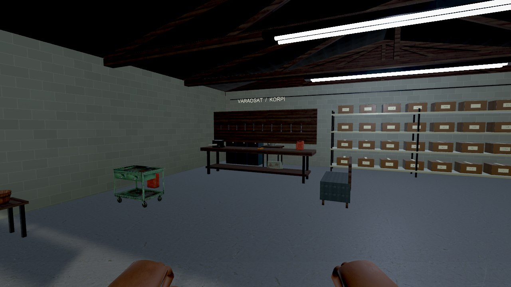
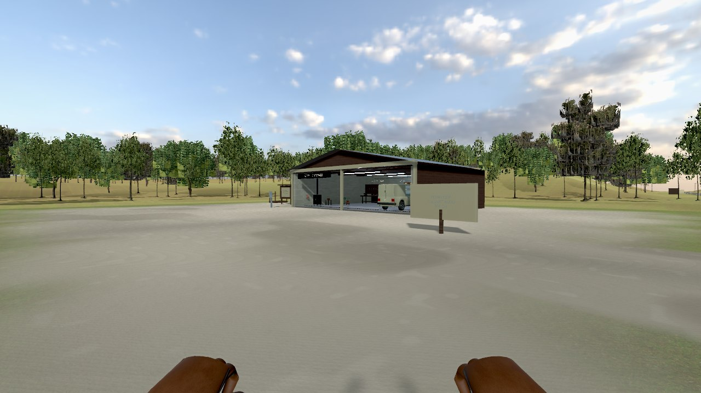
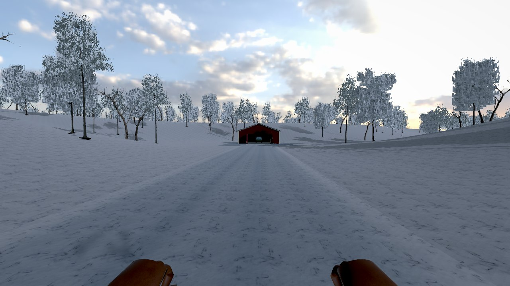

Autotalli, työkalut ja auton korjaaminen
Tallin työkalut ja kalusteet saivat uusia malleja. Työn alla ovat muun muassa jakoavaimet, kirves, kanisterit ja työkalukärry. Seinien harkkosaumoja, materiaalien mittakaavaa ja valaistusta on muutettu.
Auton osien irrotus, kantaminen ja pulttaus pysyvät pelin ytimessä. Autojen maalipintoja ja metallia kehitetään nykyisten konehuonemallien rinnalla. Tämä ei tarkoita, että kaikki automallit tai animaatiot olisivat lopullisia.

Suomalainen maaseutu kesällä ja talvella
Maapinnassa sekoittuvat nurmi, metsäpohja ja paljas maa. Metsän etäisyystasoja, taivasta, varjoja sekä kesän ja talven eroa on päivitetty. Soratie, asfaltti ja luminen tie saavat erilliset pinnat.
Pelin tavoitteena on avoin maaseutu, jossa omat projektit ja seurattava pääjuoni kulkevat rinnakkain. Hahmot, havupuiden latvukset ja osa rakennuksista tarvitsevat vielä lisää työtä.


Eskon perintö ja oma korjaamo
Tarinassa perit Eskon vanhan korpitilan. Vanha paku, keskeneräinen ralliauto ja päiväkirjan vihjeet johdattavat korjauskeikoilta omien projektien pariin. Pelin sisäinen talous käyttää fiktiivisiä CR-krediittejä.
Kampanjaa, ajotuntumaa ja korjaamista kehitetään samaan kokonaisuuteen. Kehitysversiosta otettu kuvakaappaus ei ole lupaus valmiin pelin ulkoasusta tai lopullisesta sisällöstä.
Tutustu pelin ideaan →Ei julkista demoa tai pelilatausta
0.20 on sisäinen kehitysversio. Julkista demoa tai avointa testiä ei vielä ole saatavilla. Windows PC ja Steam Early Access ovat suunniteltu julkaisusuunta; julkaisupäivää, hintaa tai Steam-kauppalinkkiä ei ole vahvistettu.
Katso kaikki uudet kehityskuvat →